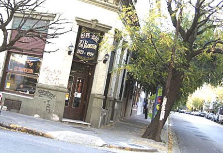

Origenes

Almagro era, en el siglo 18, antes de nacer, una zona rural donde predominaban las quintas con árboles frutales, tierras de cultivos, fábricas de ladrillos y llanura en estado natural.
Nace como un desprendimiento del barrio de San José de Flores siendo el resultado de un loteo comprado en gran parte por la familia Almagro (valga la redundancia) en el año 1839 quienes tenían una quinta ubicada en la esq de Rivadavia y Medrano donde se encontraba,hasta hace unos años,la confitería "Las Violetas".
A mediados del siglo XVIII Carlos De los Santos Valente, un pudiente comerciante portugués, adquirió una Quinta de 18 hectáreas delimitada por las calles Hipólito Yrigoyen, Castro Barros, Diaz Vélez y Billinghurst, donde construyó una casona y una capilla.
El 28 de Septiembre de 1839 Julián de Almagro obtuvo la mitad de la quinta de Valente y luego de varios años, en 1857 donó parte del terreno para dar paso a las vías del flamante Ferrocarril del Oeste y para la construcción de la estación Almagro, que se ubicaba en la intersección de los pasajes Peluffo y Lezica en aquel entonces.
Una particularidad es que el club San Lorenzo de Almagro tiene su origen en el Oratorio de San Antonio (foto de la entrada al mismo con el mural dedicado al Padre Massa) situado en México 4040, entre 33 orientales y Quintino Bocayuva. En esa calle jugaban a la pelota unos jóvenes hasta que el padre Lorenzo Massa los acogió en su Capilla a cambio de que fueran a misa los domingos. Allí nacieron “Los forzosos de Almagro” que luego dio lugar a librar el acta de fundación del club el 1 de abril de 1908.
Existen discrepancias entre los diferentes historiadores sobre el origen del barrio. Mientras algunos sostienen que el barrio surgió de un loteo de tierras pertenecientes a Toribio Almagro, otros determinan que las tierras pertenecían a Juan María Almagro y de la Torre. Esta última es la versión más difundida y aceptada, y establece que compró la quinta en 1839 a Carlos Dos Santos Valente. La zona cobró vida con la llegada del Ferrocarril del Oeste, en 1857, y con la construcción de la Estación Almagro, que funcionó hasta finales de la década de 1880 . La estación estaba ubicada a la altura de la calle Francisco Acuña de Figueroa, y el edificio fue finalmente demolido en 1903.
Debido a haber sido el terreno donado por Julián Almagro, la misma llevó su nombre, usándose éste luego para bautizar a toda la zona.Tanto antes como después del paso del tren, Almagro se caracterizó por ser zona de quintas. La evolución del barrio tuvo su gran avance, especialmente, a partir de la inauguración del tranvía. Pero la fiebre amarilla también representaría un cambio radical en la zona. A partir de ésta, muchas familias de clases altas que vivían en el área que hoy corresponde al microcentro porteño, abandonaron sus casas para instalarse en las quintas, no volviendo nunca más a la zona anterior.
Finalmente y a partir de aquella fecha 1888, cuando Flores y Belgrano pasan al municipio de Buenos Aires por Ley del 28 de septiembre de 1887 y a la creación el 8 de mayo de 1878 de la parroquia de San Carlos, el barrio de Almagro cobra una fisonomía propia.
Actualidad
Hoy en dia, Agro es conocido como uno de los más tradicionales de la Ciudad,ya que es una buena cantidad para los amantes del tango y poetas donde transitan sus calles con disfrute y en ellas es posible encontrar numerosos bares.Aún hoy subsiste uno de los más tradicionales, el Bar Las Violetas como una demostración que el barrio está dispuesto a conservar parte de su historia dedicada hacia la flia sea por sus antiguos cafés o por el tango.Además, uno de las glorias del tango hizo sonar su voz por primera vez, nada mas ni nada menos que el gran Carlos Gardel.
Las avenidas Rivadavia y Corrientes son las arterias más importantes de Almagro y aún hoy, las intersecciones de Rivadavia y Medrano, Rivadavia y Castro Barros, siguen siendo los principales puntos de encuentro de este barrio tan popular. En la calle Castro Barros se encuentran las instalaciones de la tradicional Federación Argentina de Box, escenario de memorables encuentros boxísticos y actos políticos.El barrio cuenta con la Plaza Almagro, la única que disponen los vecinos y que hace pocos años fue completamente renovada.
Limitaciones
Las calles/avenidas que dan lugar a los límites geográficos del barrio de Almagro, en la Ciudad de Buenos Aires, son las siguientes:
- Avenida Ángel Gallardo
- Avenida Estado de Israel
- Avenida Córdoba
- Calle Gallo
- Avenida Díaz Vélez
- Sánchez de Bustamante
- Sánchez de Loria
- Avenida Independencia
- Avenida La Plata
- Avenida Rivadavia
- Río de Janeiro